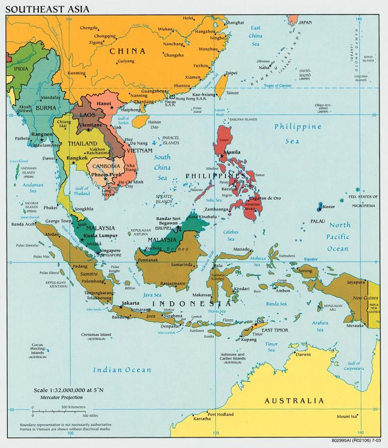
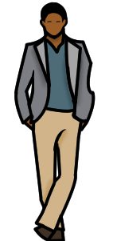
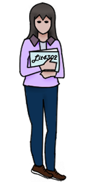

The Benefits and Effects of Southeast Asian Euphoric Teas

Have you ever wandered into a kava bar or smoke shop and heard about euphoric teas but were unsure about what exactly is euphoric tea? Well, you aren’t the only one. Frequently, these remarkable beverages are accompanied by extensive explanations, given that the term 'euphoric' can be intimidating to some. Rest assured, in small, carefully managed quantities, euphoric teas yield mild effects, ensuring safe usage. After all, a lot of the mild effects elicited from euphoric teas are often beneficial, such as the effect of relaxation. To understand more about the euphoric teas gaining popularity among the kava community, continue reading.
The Historical Significance of Southeast Asian Euphoric Tea
Understanding the historical significance of a beverage can provide insight into the usage context and the effects it often provides.
Throughout history, various cultures have embraced the use of euphoric teas derived from botanical sources for their relaxing, mood-enhancing, and stimulating properties. These teas were cherished for their soothing effects provided to the body and mind.
Euphoric teas have a rich history in many areas of the world. However, in contemporary times, there are only a handful of euphoric teas that are legally accessible in Westernized nations like America and diverse regions of Europe. While there are numerous types of euphoric teas, the specific type of euphoric tea we will be talking about is a legal leaf often referred to as just ‘leaf’ or ‘strain’ and is from the Rubiaceae family, also known as the ‘coffee’ family. For the sake of this article, we will be calling it ‘the euphoric leaf’.
The euphoric leaf is deeply rooted in Southeast Asian culture. This euphoric leaf is native to countries like Thailand, Malaysia, Indonesia, and Papua New Guinea where it has been used for centuries due to its remarkable properties and potential benefits.
In ancient times it was traditional to consume euphoric teas. One of the traditional purposes for consuming this euphoric leaf was to promote digestive well-being and alleviate pain. Oftentimes, it was prevalent for individuals engaged in laborious occupations to indulge in the Southeast Asian euphoric leaf, as they found that it facilitated a smoother passage through the demanding workday.
Similarly, modern-day usage of the euphoric leaf is praised for its ability to support daily tasks and promote relaxation. Oftentimes times you can find this euphoric leaf sold online, in kava bars, and smoke shops. However, the sale of this euphoric tea is often limited to people 21+ and sometimes all together based on individual state laws.
The Benefits and Effects of The Euphoric Leaf
To ensure responsible and well-informed usage, as with any substance, it's crucial to comprehend its effects thoroughly and prioritize safe usage to mitigate potential adverse effects.
As the name states, the euphoric leaf has properties that provide euphoric effects, but it also provides other effects such as:
- Alleviating discomfort
- Increasing energy
- Boosting focus
- Enhancing productivity
What are the Reasons People Drink it?
The main groups of individuals who find solace in the euphoric leaf are students and professionals due to its multifaceted properties.
Professionals often find solace in the euphoric leaf as it can offer a potential edge in the demanding world of work with its focus and energy properties. Its stimulating effects can be conducive to productivity, aiding professionals in staying alert and efficient throughout their busy schedules.
On the other hand, students are drawn to the euphoric leaf for its potential cognitive benefits, which may include increased concentration, improved memory retention, and an overall enhancement in mental clarity. These attributes make it an attractive choice for students seeking to excel academically and manage the rigors of their studies effectively.
Another reason for the usage of the euphoric leaf is that it often helps victims of drug abuse with withdrawals.
How Is Euphoric Tea Prepared and Consumed?
Euphoric tea is prepared in many ways. The preparation style can depend on the harvesting techniques. The various harvesting methods can limit some of the effects while intensifying others. Due to these changes, it is often prepared in different ways to bring out the different effects. It’s also important to note that the effects can vary based on dosage and individual tolerance. Some effects are more significant in smaller amounts while others are more prominent in larger amounts. In smaller amounts, the body will treat the tea as a stimulant while it produces more sedative effects in higher amounts. The euphoric Southeast Asian leaf will also enhance certain properties when paired with other foods and drinks.
Since the euphoric tea is from a plant, the taste usually requires a bit of time to get used to. The taste isn’t necessarily bad, as it can be easily masked when paired with other drinks, but it does have an earthy tone to it. Therefore, in modern-day times it is common to see it paired with drinks like orange juice and lemonade. When the euphoric tea is prepared as a ‘brew,’ it tastes better and is less gritty. On some occasions though, especially if it is your first time trying it, the taste can still be too earthy. In those incidents, you can add juice, syrups, or honey to mask the taste.
Although euphoric tea offers numerous benefits, its controversial nature arises from the lack of regulation in many regions. That is why it is beneficial to try your first drink at a reputable kava bar where professionals are trained in the preparation of euphoric tea.
Note: When looking to try euphoric tea, don’t be afraid to ask questions and learn more about the product.
Come Try Midtown Kava Lounge’s Euphoric Tea in Tallahassee, Florida
Euphoric tea, with its historical roots and potential positive effects, continues to intrigue both traditional users and modern enthusiasts. As research on this herbal substance progresses, a deeper understanding of its benefits and potential applications is expected. However, it's crucial to approach euphoric tea with caution, understand its properties, and consult a healthcare professional before use to ensure safe consumption and reap the potential advantages it may offer.
Whether you are looking to try euphoric tea for the first time or you are an avid consumer, come check out Midtown Kava Lounge in Tallahassee Florida. MKL’s mission encompasses the traditional values of kava along with the convenience of modern-day consumption. You can view our menu online to see how we prepare our products or speak with one of our team members when you come in! We at MKL hope to see you soon. Bula!
Disclaimer: The content of Capital City Kava’s website is for information only. The information is gathered and shared from reputable sources; however, it is not to replace professional medical advice and should not be relied on as health or personal advice. Capital City Kava is not responsible for errors or omissions in the reporting of explanations. No individuals shall use the information, resources, or products to self-diagnose or self-treat any health-related condition. References and links to third parties do not constitute an endorsement or warranty by Capital City Kava therefore Capital City Kava gives no assurance or warranty regarding the accuracy, timeliness, or applicability of the content.